忠誠點轉盤
使用說明書
觀眾兌換忠誠點 → 自動轉盤 → 自動記到 Google 試算表
觀眾兌換
忠誠點品項在 Twitch 聊天室
→
轉盤自動轉你的網頁＋OBS 畫面
→
自動寫進
試算表當月分頁、總表跟著更新
不用寫程式、不用懂網頁。照著做，第一次大約 15 分鐘，之後每次開台只要打開網頁。
網址：https://yy2401.github.io/lucky-wheel/twitch.html
2026 年 10 月版
目錄
- 1開始之前：你需要準備什麼2 分鐘
- 2它是怎麼運作的先看懂，後面比較好做
- 3打開網頁
- 4設定步驟 1：連接 Twitch1 分鐘
- 5設定步驟 2：選擇要觸發轉盤的品項2 分鐘
- 6設定步驟 3：連接 Google 試算表5～10 分鐘，最重要
- 7設定步驟 4：轉盤內容（可略過）
- 8設定步驟 5：放到 OBS 直播畫面（可略過）
- 9直播畫面看懂了沒
- 10每次開台要做的事
- 11常用操作：手動補一筆、撤銷、試轉
- 12出問題怎麼辦
- 13名詞小抄
怎麼看這份說明書
像這樣的框 代表畫面上的按鈕；虛線框 代表選單裡的項目；A → B → C 代表依序點下去。⚠️ 是容易出錯的地方，請特別看一下。
1 開始之前：你需要準備什麼
- 一台電腦，用 Google Chrome 或 Microsoft Edge 瀏覽器。直播時這台電腦要開著這個網頁（通常就是你開台的那台電腦）。
- 你的 Twitch 實況主帳號，而且頻道是聯盟（Affiliate）或合作夥伴（Partner）——這樣才有「忠誠點」功能。
- 你的轉盤紀錄試算表，放在 Google 雲端硬碟（就是「常駐_揪團_抖內_忠誠點轉盤紀錄」那一份），以及能編輯它的 Google 帳號。
- （可選）OBS：想讓觀眾在直播畫面上看到轉盤才需要。
設定會存在「這台電腦的這個瀏覽器」裡
換一台電腦、換瀏覽器，或清除了瀏覽器資料，就要重新設定一次（第 12 章有說明）。所以請在平常開台的那台電腦上設定。
2 它是怎麼運作的
你只要開著「忠誠點轉盤」網頁，接下來全部自動：
- 觀眾在 Twitch 用忠誠點兌換你指定的品項（例如「忠誠點轉盤」）。
- 網頁馬上收到通知，自動轉一次轉盤；有設定 OBS 的話，直播畫面上的轉盤也會同時轉。好幾個人一起兌換時會排隊，一個一個轉。
- 轉到的結果（例如「3點」）自動寫進你的試算表。
試算表會被改到哪裡？
完全照你原本的試算表格式，不會新增奇怪的分頁：
- 在當月的分頁（例如「10月」）找到那位觀眾的那一列、兌換當天底下轉到的那一欄（例如「3點」），把那格的數字 +1。
- 「總表」本來就是用公式從各月份加總的，所以會自己更新，不用動它。
- 如果是第一次出現的觀眾，會自動把他加進「兌換紀錄」分頁 B 欄名單的第一個空白列，格式跟你原本一樣：
顯示名稱(帳號)。
| 編號 | 名稱 | 10/3 | 10/4（今天） |
|---|
| 1點 | 3點 | 5點 | 1點 | 3點 | 5點 |
|---|
| 1 | 嘎唄(gabai) | 1 | | | | 1 → 2 | |
| 2 | HaruneUka(haruneuka) | | 2 | | 1 | | |
例：嘎唄今天又轉到「3點」，「10月」分頁 10/4 的「3點」那格從 1 變成 2
怎麼認出是哪位觀眾？
用括號裡的 Twitch 帳號（英文那個）。觀眾改了中文顯示名稱也認得出來；名單裡只寫帳號、或只寫名字的舊資料也找得到。
3 打開網頁
- 打開 Chrome 或 Edge，在最上面的網址列輸入（或貼上）：
https://yy2401.github.io/lucky-wheel/twitch.html，按鍵盤的 Enter。
- 建議加入書籤：按鍵盤 Ctrl＋D → 完成。以後從書籤列點一下就能打開。
- 第一次打開會看到「3 個步驟就能開始」，接下來照著第 4～8 章一步一步做。
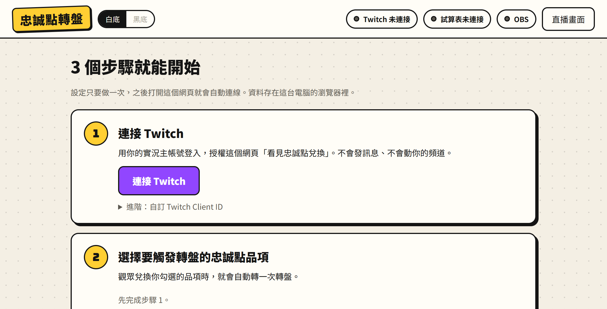
第一次打開的畫面。右上角三顆圓點是「狀態燈」，設定好會變綠色。
做到一半想休息？
直接關掉沒關係，做好的步驟都會保存。下次打開會回到這個設定畫面，已完成的步驟會打勾 ✓。
4 設定步驟 1：連接 Twitch
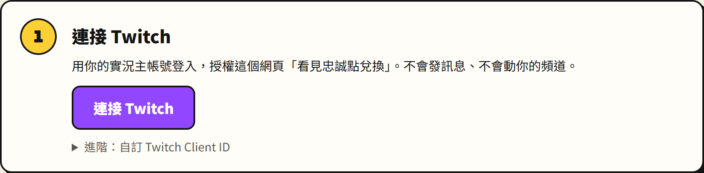
- 按紫色的 連接 Twitch。
- 畫面會跳到 Twitch 的網站。如果還沒登入，先用你的實況主帳號登入。
- Twitch 會問你是否允許這個網頁「查看頻道點數兌換」，按 授權（Authorize）。
- 自動跳回轉盤網頁，步驟 1 會打勾，並顯示「已連接：你的名字」。
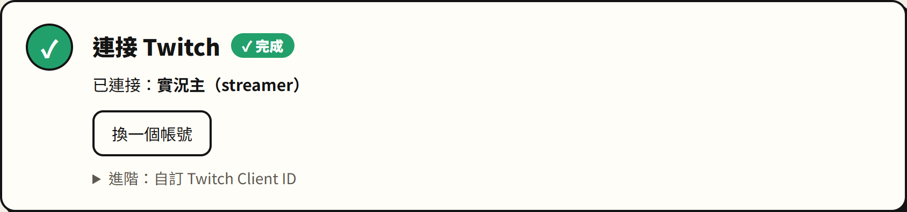
完成後的樣子
這個授權安全嗎？
網頁只拿到「看得到忠誠點兌換」這一項權限，不能幫你發訊息、改標題、動你的頻道或忠誠點。想取消的話，到 Twitch 的「設定 → 連線」可以隨時中斷。
登錯帳號了？
按 換一個帳號 重新登入。一定要用有忠誠點的那個實況主帳號，用小帳或觀眾帳號是收不到兌換的。
5 設定步驟 2：選擇要觸發轉盤的品項
步驟 1 完成後，這裡會列出你頻道所有的忠誠點品項。勾選要觸發轉盤的那一個（可以勾好幾個），勾了就完成，不用另外按儲存。
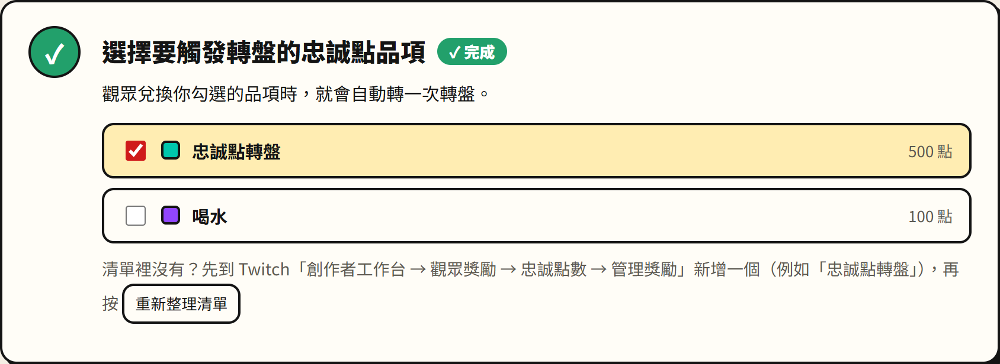
勾選「忠誠點轉盤」：觀眾兌換它才會轉；兌換「喝水」不會轉
清單裡沒有我要的品項？先到 Twitch 新增一個
- 在 Twitch 網站右上角點你的頭像 → 創作者工作台。
- 左邊選單找到 觀眾獎勵 → 忠誠點數。
- 按 管理獎勵與挑戰 → ＋ 新增自訂獎勵。
- 名稱填例如「忠誠點轉盤」，設定要花多少點數，按 建立。
- 回到轉盤網頁，按 重新整理清單，就會出現了，勾選它。
Twitch 的選單名稱可能和這裡寫的有點不一樣
Twitch 偶爾會改版，但大方向都是「創作者工作台 → 觀眾獎勵 → 忠誠點數」。找不到時在創作者工作台的搜尋欄打「獎勵」也可以。
Twitch 上的「需要觀眾輸入文字」請不要勾
不影響轉盤，但觀眾會多一個要打字的步驟。另外，網頁不會自動把兌換標成「已完成」，Twitch 的兌換佇列請照你原本的習慣處理（或把該獎勵設成「略過獎勵請求佇列」）。
6 設定步驟 3：連接 Google 試算表
這一步是讓網頁「有權限」寫你的試算表。看起來步驟多，但只要做一次，而且每一步都只是點按鈕和複製貼上。
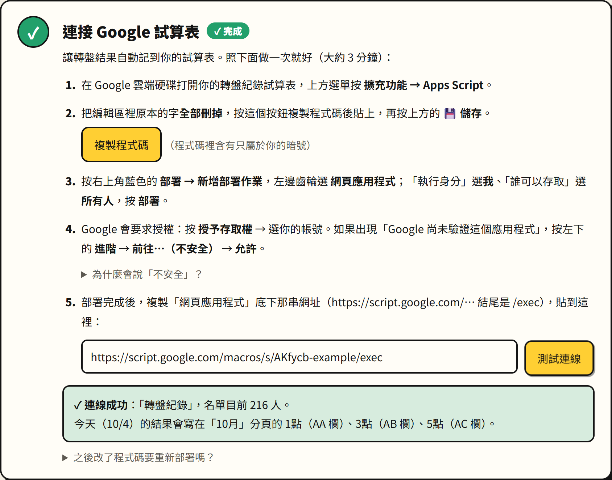
網頁上的步驟 3。下面每一小步都對應網頁上的 1～5。
建議開兩個視窗
一邊是轉盤網頁，一邊是 Google 試算表，來回切換比較方便（Windows：按住 Alt 再按 Tab 可以切換視窗）。
6-1 打開試算表的 Apps Script
- 到 Google 雲端硬碟，打開你的轉盤紀錄試算表（「常駐_揪團_抖內_忠誠點轉盤紀錄」）。
- 上方選單點 擴充功能 → Apps Script。
- 會開一個新分頁，標題是「未命名的專案」，中間有一塊寫著
function myFunction() { … } 的編輯區。
一定要從「這份試算表」裡面點 擴充功能 → Apps Script
不要從 Google 雲端硬碟首頁另外新增 Apps Script，那樣程式不知道要寫哪一份試算表。
6-2 貼上程式碼
- 在 Apps Script 的編輯區裡點一下，按 Ctrl＋A（全選），再按 Delete，把原本的字全部刪掉。
- 回到轉盤網頁，按步驟 3 裡黃色的 複製程式碼，按鈕會變成「✓ 已複製」。
- 回到 Apps Script 編輯區，按 Ctrl＋V 貼上。會出現一大段文字，開頭是「忠誠點轉盤 → Google 試算表 接收器」。
- 按上方的 💾 儲存專案（磁碟片圖示），或按 Ctrl＋S。
程式碼裡有一組「只屬於你的暗號」，請不要改它、也不要傳給別人
這組暗號讓試算表只接受你的轉盤網頁寫入。程式碼裡其他文字也都不需要修改。
6-3 部署成「網頁應用程式」
「部署」的意思是把剛剛貼的程式啟動起來，產生一個專屬網址讓轉盤網頁連過來。
- Apps Script 右上角按藍色的 部署 → 新增部署作業。
- 跳出的視窗左上方「選取類型」旁邊有一個齒輪 ⚙，點它 → 選 網頁應用程式。
- 右邊會出現幾個欄位，照這樣設定：
| 欄位 | 要選什麼 |
|---|
| 說明 | 可以不填（或填「轉盤」） |
| 執行身分 | 我（後面會顯示你的 Gmail） |
| 誰可以存取 | 所有人 ⚠️ 最常選錯的地方，不是「只有我自己」也不是「擁有 Google 帳戶的使用者」 |
- 按右下角的 部署。
「所有人」是什麼意思？會不會被亂寫？
意思是「不用登入 Google 也能連到這個程式」，這樣轉盤網頁才連得進來。但程式只接受帶有你的暗號的請求，別人就算拿到網址也寫不進去。
6-4 允許程式存取你的試算表（第一次才會問）
- 出現「網頁應用程式需要你授權存取你的資料」→ 按 授權存取。
- 跳出小視窗，選擇你的 Google 帳號（擁有這份試算表的那一個）。
- 很可能會看到一個看起來很嚇人的畫面：「Google 尚未驗證這個應用程式」。這是正常的，請這樣做：
- 點左下角的小字 進階（Advanced）。
- 再點最下面的 前往「未命名的專案」（不安全）。
- 列出程式要的權限（查看及管理你的試算表），按 允許。
為什麼 Google 說「不安全」？
因為這段程式是你自己剛剛建立的，沒有送去給 Google 審核，Google 對所有沒審核的程式都會這樣提醒，並不是真的有危險。程式只會讀寫這一份試算表，不會看你的其他檔案或信件。
如果點完「允許」小視窗就消失、沒看到網址
回到 Apps Script，再按一次 部署 → 新增部署作業，設定一樣，這次就不會再問權限，直接給你網址。
6-5 複製網址，貼回轉盤網頁
- 部署成功的視窗會顯示「網頁應用程式」底下一串網址，長得像：
https://script.google.com/macros/s/AKfycb……很長……/exec
按它旁邊的 複製。
- 回到轉盤網頁步驟 3 的第 5 點，點一下輸入框，按 Ctrl＋V 貼上。
- 按 測試連線。
6-6 看測試結果
成功的話會出現綠色框，告訴你連到哪一份試算表、名單有幾個人、今天的結果會寫在哪幾欄。步驟 3 會打勾 ✓。
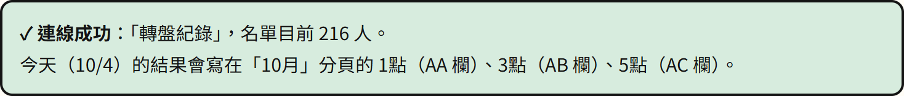
成功：今天（10/4）的結果會寫在「10月」分頁的 AA、AB、AC 欄
建議順手核對一下
打開試算表的「10月」分頁，看看 10/4 底下的「1點／3點／5點」是不是真的在它說的那幾欄（欄名在最上面一排：A、B、C…AA、AB…）。對得上就沒問題了。
失敗的話會出現紅色框和原因，照下表處理：
| 看到的訊息 | 怎麼辦 |
|---|
| 網址看起來不對／這是程式編輯器的網址 | 貼錯網址了。要貼的是部署完成視窗裡、結尾是 /exec 的那一串，不是瀏覽器網址列上的網址。可以到 Apps Script 按 部署 → 管理部署作業 找到它。 |
| 連不到試算表 | 多半是 6-3「誰可以存取」沒選「所有人」。到 管理部署作業 → ✏️ 編輯 → 改成「所有人」→ 版本選「新版本」→ 部署。 |
| 暗號不符 | 貼到 Apps Script 的程式碼不是這台電腦複製的。重新做 6-2（複製、全刪、貼上、儲存），再到 管理部署作業 → ✏️ 編輯 → 版本選「新版本」→ 部署。 |
| 找不到「兌換紀錄」分頁 | 程式是從別的試算表打開的，或分頁被改名了。確認 6-1 是從轉盤紀錄試算表裡點的。 |
| 找不到「10月」分頁／找不到 10/4 這一天 | 試算表還沒有這個月的分頁，或分頁第一排沒有這天的日期。照原本的格式補上（見第 12 章）。 |
7 設定步驟 4：轉盤內容（可略過）
已經照你的試算表設好：1點、3點、5點三格。只有想調整機率或格子時才需要動。
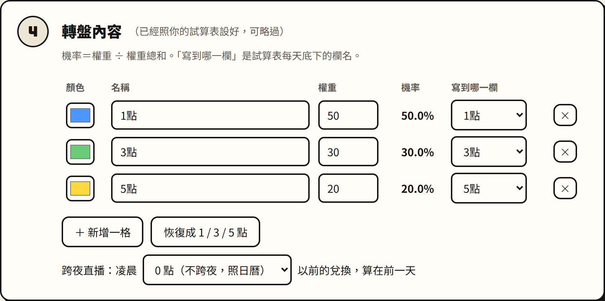
| 欄位 | 意思 |
|---|
| 顏色 | 轉盤上這一格的顏色，點一下可以換。 |
| 名稱 | 轉盤上和結果顯示的文字。 |
| 權重 | 數字越大越容易轉到。機率＝這格的權重 ÷ 全部權重加起來。例如 50、30、20 → 50%、30%、20%（旁邊「機率」會自動算給你看）。 |
| 寫到哪一欄 | 轉到這格時，要在試算表每天底下的哪一欄 +1。要和試算表第二排的欄名一模一樣。 |
- 改了會立刻生效，不用按儲存。按 ＋ 新增一格 加格子、按 ✕ 刪除格子。
- 弄亂了按 恢復成 1 / 3 / 5 點（恢復成 50%／30%／20%）。
改了「寫到哪一欄」之後
請回步驟 3 再按一次 測試連線，確認試算表裡找得到那一欄。
跨夜直播：凌晨幾點以前算前一天
預設是「0 點（照日曆）」：凌晨 00:30 的兌換算在新的一天。如果你常常播過午夜，希望凌晨的兌換算在開台那一天，就改成例如「4 點」——凌晨 4 點以前的都算前一天。
8 設定步驟 5：放到 OBS 直播畫面（可略過）
做完這一步，觀眾在直播畫面上就看得到轉盤轉動和結果。平常轉盤是隱藏的，有人兌換時才會出現，轉完自己消失。
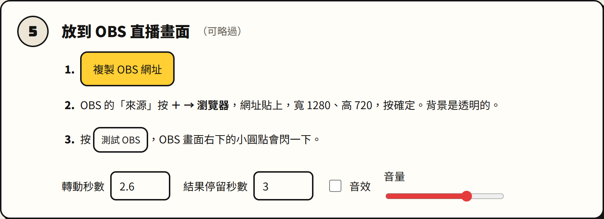
- 在轉盤網頁步驟 5 按 複製 OBS 網址。
- 打開 OBS，在下方「來源」區塊按 ＋ → 選 瀏覽器（Browser）。
- 名稱填「忠誠點轉盤」→ 確定。
- 在「URL」欄位：先把裡面原本的網址刪掉，再按 Ctrl＋V 貼上剛剛複製的網址。
- 寬度填 1280、高度填 720，其他不用改，按 確定。
- 回轉盤網頁按 測試 OBS：OBS 畫面右下角的小圓點閃一下、轉盤網頁出現「OBS 畫面有回應 ✓」，就成功了。
（灰白格子代表透明，實際會疊在你的直播畫面上）
- 在 OBS 預覽畫面可以拖曳、縮放這個來源，調到你喜歡的位置和大小。
- 「轉動秒數」「結果停留秒數」「音效」「音量」在步驟 5 下方調整，OBS 畫面會跟著變。
OBS 的網址也是專屬的
裡面也含有暗號，請不要公開。換電腦重新設定後，要重新複製一次 OBS 網址貼到 OBS。
全部設定好後，按頁面最下面的 完成，開始直播 →。
9 直播畫面看懂了沒
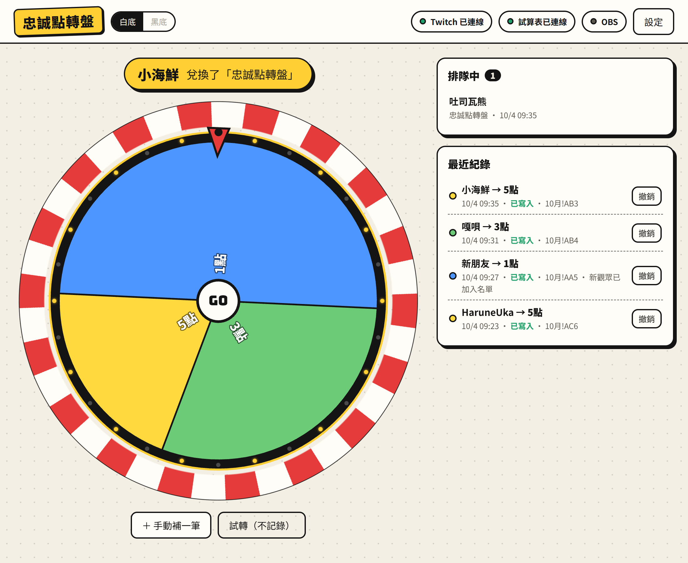
有人兌換時的直播畫面
| 位置 | 說明 |
|---|
| 上方黃色條 | 現在在幫誰轉、他兌換了什麼品項。沒人兌換時顯示「等待兌換中…」。 |
| 中間轉盤 | 自動轉動，停下後下方顯示「某某 轉到 3點」。 |
| 右上「排隊中」 | 同時有好幾個人兌換時，還沒轉到的人會在這裡排隊，一個一個來。 |
| 右下「最近紀錄」 | 每一筆轉盤結果，以及有沒有寫進試算表（寫在哪一格）。 |
| 右上角 設定 | 隨時回到設定畫面；設定畫面右上角 直播畫面 可以回來。 |
右上角三顆狀態燈
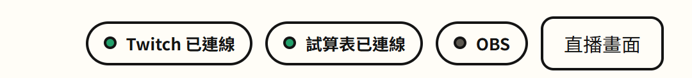
| 燈號 | 意思 |
|---|
| 綠色 | 正常。 |
| 黃色閃爍 | 正在連線或正在寫入，等幾秒通常就好。 |
| 紅色 | 有問題，畫面最上方會出現紅色提醒條和處理按鈕（見第 12 章）。 |
| 灰色 | 還沒設定。「OBS」燈是灰色不代表壞掉，只是網頁還沒收到 OBS 的回應；按步驟 5 的「測試 OBS」會變綠。 |
點任何一顆燈，會直接跳到它的設定步驟。
「最近紀錄」裡的狀態
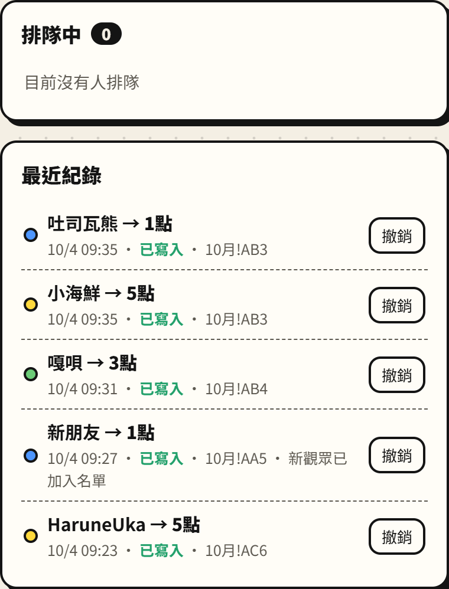
| 狀態 | 意思 |
|---|
| 已寫入 | 已經寫進試算表，後面是寫入的格子（例如 10月!AB3 = 「10月」分頁 AB 欄第 3 列）。「新觀眾已加入名單」表示這位觀眾第一次出現，已加進名單。 |
| 寫入中… | 正在寫，通常 1～3 秒。 |
| 寫入失敗 | 後面會寫原因，旁邊有 重試。 |
| 已撤銷（刪除線） | 按過「撤銷」，試算表已經減回去。 |
| 試轉（刪除線） | 按「試轉」轉的，沒有寫進試算表。 |
10 每次開台要做的事
- 用書籤打開忠誠點轉盤網頁（會自動連線，不用重新設定）。
- 看右上角：Twitch 和 試算表 兩顆燈是綠色的。
- （有用 OBS 的話）開 OBS。想確認的話按 設定 → 步驟 5 的 測試 OBS。
- 開台！之後不用管它。
直播時不要關掉這個網頁
網頁關掉就收不到兌換了。可以把它縮小或切到別的分頁，沒關係。也請把電腦的自動睡眠關掉（Windows：設定 → 系統 → 電源 → 螢幕與睡眠，設成「永不」）。
同一個網頁只能開一個分頁
不小心開了兩個，第二個會顯示「這個網頁已經在另一個分頁開著」並暫停，避免同一筆兌換轉兩次。回到原本的分頁就好；或在新分頁按「改由這個分頁接手」。
關台後
等「最近紀錄」裡沒有「寫入中…」再關網頁。還有沒寫完的紀錄時，關網頁會跳出「確定要離開？」提醒你。真的關了也不要緊：紀錄存在瀏覽器裡，下次打開會自動補寫。
網路斷線或試算表暫時連不上？
不用緊張，轉盤照樣轉，結果先存在網頁裡，網頁會每隔一段時間自動重試，連上後自動補寫。Twitch 斷線也會自動重新連線。
11 常用操作
手動補一筆（漏掉的兌換）
例如網頁沒開的時候有人兌換了，可以手動補：
- 直播畫面按 ＋ 手動補一筆。
- 輸入觀眾名稱，下面三種寫法都可以：
小于甜心 (xiaoyuthesweetheart_)、xiaoyuthesweetheart_（帳號）、或試算表名單裡的名稱。
- 按 轉！，會轉一次並寫進試算表。
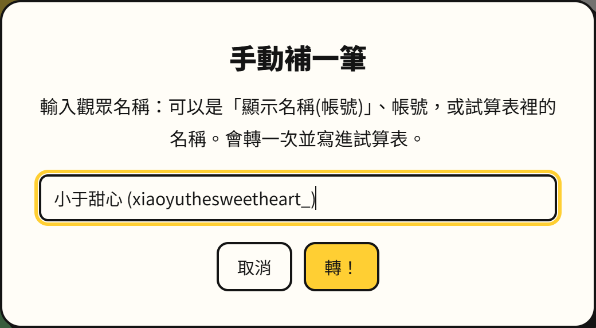
補登會記在「今天」
如果是前幾天漏掉的，又想記在當天，請直接打開試算表，在那天那一格手動 +1。
撤銷（記錯了、要作廢）
- 在「最近紀錄」找到那一筆，按旁邊的 撤銷。
- 確認視窗按 撤銷，試算表那格會 −1，紀錄變成「已撤銷」。
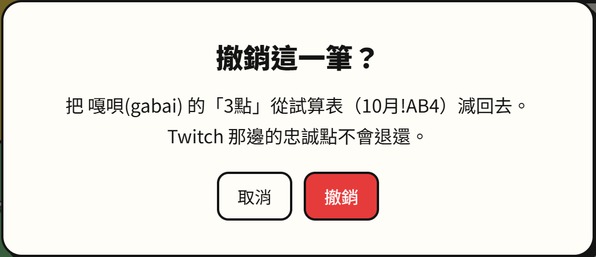
撤銷不會退還觀眾在 Twitch 的忠誠點，要退的話請在 Twitch 的兌換佇列裡處理。
試轉（不記錄）
按 試轉（不記錄） 會轉一次給你看，不會寫進試算表。適合開台前確認轉盤、OBS 畫面正常。
12 出問題怎麼辦
出問題時，畫面最上方會出現紅色提醒條，通常直接按提醒條右邊的按鈕就能解決。
「Twitch 登入過期了」
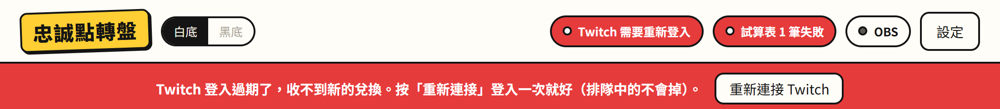
Twitch 的登入每隔一段時間會失效，這是正常的。按 重新連接 Twitch，照第 4 章再授權一次就好。排隊中的兌換和紀錄都不會不見，但過期期間有人兌換的話網頁收不到，請用「手動補一筆」補上。
「有 N 筆沒寫進試算表」
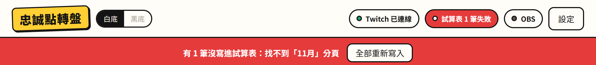
看紀錄後面寫的原因：
| 原因 | 怎麼辦 |
|---|
| 找不到「11月」分頁 | 試算表還沒有這個月的分頁。在試算表下方的分頁標籤上，對上個月（例如「10月」）按右鍵 → 複製，把新分頁改名成「11月」，第一排的日期改成 11 月的日期、把各天的數字清掉（只清每天的數字，不要刪掉「當月總結」的公式）。然後回網頁按 全部重新寫入。 |
| 找不到 11/1 這一天 | 月份分頁第一排的日期不對或缺了這天，補上後按 重試。 |
| 找不到「3點」欄 | 試算表那天底下的欄名和步驟 4「寫到哪一欄」不一樣，改成一樣後按 重試。 |
| ……是公式，不敢覆蓋 | 那一格裡是公式，網頁不會亂改。檢查一下試算表那格為什麼是公式。 |
| 暗號不符 | 見第 6-6 節表格。 |
「試算表寫入失敗：連不到試算表」
通常是網路暫時不穩，網頁會自動重試，等一下就好；也可以按 立刻重試。一直不好的話，回設定步驟 3 按 測試連線 看原因。
其他常見問題
| 狀況 | 怎麼辦 |
|---|
| 觀眾兌換了，轉盤沒轉 | ① 看 Twitch 燈是不是綠色；② 設定步驟 2 有沒有勾到觀眾兌換的那個品項；③ 網頁是不是開著（且不是「另一個分頁開著」的暫停畫面）。 |
| 網頁有轉，OBS 畫面沒出現 | ① 設定步驟 5 按「測試 OBS」，看 OBS 右下角小圓點有沒有閃；② 確認 OBS 裡的網址是最新複製的；③ 在 OBS 對該來源按右鍵 → 內容 → 最下面 重新整理目前頁面的快取。 |
| OBS 右下角小圓點是紅色 | OBS 網址不完整或是舊的，重新複製 OBS 網址貼上。 |
| 觀眾改了名字 | 不影響，網頁用 Twitch 帳號找人。試算表上的名稱不會自動改，想改可以自己改，但括號裡的帳號請保留。 |
| 同一個人在名單上出現兩次 | 可能舊資料的帳號拼錯了。把兩列合併成一列（括號裡寫正確的 Twitch 帳號）即可。 |
| 名單 999 人滿了 | 新觀眾會接在最後一列之後，但月份分頁和總表沒有那一列的公式。請照原本的方式往下多拉幾列公式。 |
| 換電腦／換瀏覽器／清了瀏覽器資料 | 要重做設定步驟 1～5。⚠️ 步驟 3 一定要用新電腦按「複製程式碼」，貼到 Apps Script 取代舊的、儲存，再 部署 → 管理部署作業 → ✏️ 編輯 → 版本選 新版本 → 部署（網址不會變）。OBS 網址也要重新複製。 |
| 新的一年換了一份新的試算表 | 在新的試算表上重做第 6 章（會得到新的網址），貼到步驟 3 測試連線。 |
| 想確認到底有沒有寫進去 | 「最近紀錄」每一筆後面都寫了格子位置（例如 10月!AB3），到試算表對應分頁的那一格看就知道。 |
還是解決不了？
把畫面最上方紅色提醒條的文字，或「最近紀錄」那筆後面寫的原因，截圖給幫你架設的人看，他就能知道是哪裡出問題。
13 名詞小抄
| 名詞 | 白話解釋 |
|---|
| 忠誠點／忠誠點品項 | Twitch 觀眾看台累積的頻道點數；「品項」是你設定讓觀眾用點數兌換的東西（例如「忠誠點轉盤」）。 |
| 授權 | 允許某個網頁使用你帳號的某些功能。這裡只允許「看得到忠誠點兌換」。 |
| Apps Script | Google 試算表內建的小程式功能。我們把一段程式貼進去，讓它幫忙寫試算表。 |
| 部署 | 把 Apps Script 的程式「啟動」起來，並產生一個專屬網址。 |
| 網頁應用程式網址 | 部署後拿到、結尾是 /exec 的那串網址，轉盤網頁靠它把結果送進試算表。 |
| 暗號 | 寫在程式碼和網頁裡的一串密碼，用來確認寫入的確實是你的轉盤網頁。 |
| 分頁 | 試算表下方的標籤，例如「總表」「兌換紀錄」「10月」。 |
| 欄／列 | 欄是直的（用英文字母 A、B…AA、AB 表示），列是橫的（用數字 1、2、3 表示）。「10月!AB3」＝「10月」分頁的 AB 欄第 3 列。 |
| OBS 瀏覽器來源 | OBS 裡可以顯示網頁的來源，用來把轉盤疊在直播畫面上。 |
| 權重 | 決定每一格被轉到機會大小的數字，越大越容易轉到。 |
一頁總結
設定一次：連 Twitch → 勾品項 → 把程式碼貼進試算表的 Apps Script 並部署 → 網址貼回來測試 →（可選）OBS。
每次開台：打開網頁、看燈是綠的、不要關網頁。
有紅色提醒：按提醒條上的按鈕。